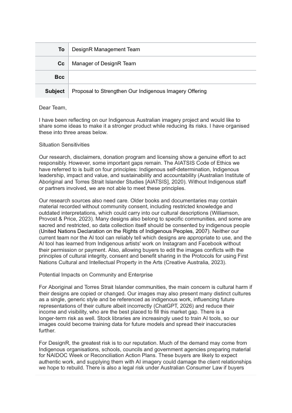

1
Ethics, with a focus on Indigenous communities
Gap. I had followed data controls at work but never reasoned through them, and had no experience with Indigenous communities.
What I did. Completed the Indigenous Professional Capability and Working Ethically in the IT Industry modules. Applied the AIATSIS Code, the ICIP Protocols, UNDRIP and the ACS Code to a real business case. Recorded the source and licence of every dataset in my F1 project.

DesignR proposal: why disclaimers and donations are not consent, and three Indigenous-led alternatives. Includes my AI-use acknowledgement.Complete